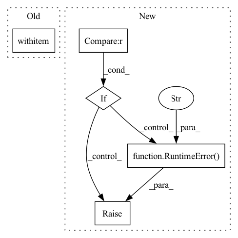

Pattern ID :23268
Before Change
_fold_to_weight(conv, bn, fold_backward=fold_backward)
with utils .on_cpu(model), utils.in_eval_mode(model), torch.no_grad():
for conv, bn in conv_bn_pairs:
_fold(conv, bn, fold_backward=True)
After Change
// pylint: disable=protected-access
device = utils.get_device(model)
if device != torch.device("cpu") :
raise RuntimeError(f"Expected model to be on cpu, not {device}." )
for bn, conv in bn_conv_pairs:
if isinstance(conv, QcQuantizeWrapper):
raise RuntimeError(f"Forward folding to scale is not possible. Got {conv}")In pattern: SUPERPATTERN
Frequency: 3
Non-data size: 5
Instances Fragment ID: 73448086
Project Name: quic/aimet
Commit Name: de8c6b6fb868450f8ce90d326732456a63ffcba6
Time: 2022-05-22
Author: quic_kyunggeu@quicinc.com
File Name: TrainingExtensions/torch/src/python/aimet_torch/batch_norm_fold.py
M Class Name: AnonimousClass
N Class Name: AnonimousClass
M Method Name: _fold_given_batch_norms(3)
N Method Name: _fold_given_batch_norms(3)
M Parent Class:
N Parent Class:
M File Name: TrainingExtensions/torch/src/python/aimet_torch/batch_norm_fold.py
N File Name: TrainingExtensions/torch/src/python/aimet_torch/batch_norm_fold.py
M Start Line: 311
M End Line: 325
N Start Line: 298
N End Line: 328
Before Change
input_dict[arg][0], arg_type
)
with Environment ._layer(step_is_running=True):
return_values = self._FUNCTION(**function_params)
spec = inspect.getfullargspec(inspect.unwrap(self._FUNCTION))After Change
// that the step function code can access to retrieve information about
// the pipeline runtime, such as the current step name and the current
// pipeline run ID
if self._context is None :
raise RuntimeError(
"No TFX context is set for the currently running pipeline. "
"Cannot retrieve pipeline runtime information."
)
with Environment._layer(
step_is_running=True,
pipeline_name=self._context.pipeline_info.id, // type: ignore[attr-defined]
pipeline_run_id=self._context.pipeline_run_id, Fragment ID: 73448087
Project Name: maiot-io/zenml
Commit Name: 5db47f046f3876ceb0f768c454923ebabdc923bf
Time: 2022-01-31
Author: stefan@zenml.io
File Name: src/zenml/steps/utils.py
M Class Name: _FunctionExecutor
N Class Name: _FunctionExecutor
M Method Name: Do(4)
N Method Name: Do(4)
M Parent Class: BaseExecutor
N Parent Class: BaseExecutor
M File Name: src/zenml/steps/utils.py
N File Name: src/zenml/steps/utils.py
M Start Line: 412
M End Line: 412
N Start Line: 417
N End Line: 427
Before Change
def process(self, audio_path):
// start = timeit.default_timer()
with torch .no_grad():
if isinstance(audio_path, str):
audio, _ = librosa.load(audio_path, sr=self.sample_rate) // reading the data
else:After Change
def process(self, audio_path, inference_model, plot = False):
if inference_model == "PF" : // instantiating a Particle Filter decoder - Is Chosen for online inference
self.estimator = particle_filter_cascade(beats_per_bar=[], fps=50, plot=plot)
elif inference_model == "DBN": // instantiating an HMM decoder - Is chosen for offline inference
self.estimator = DBNDownBeatTrackingProcessor(beats_per_bar=[2, 3, 4], fps=50)
else:
raise RuntimeError("inference_model can be either "PF" or "DBN"" )
preds = self.activation_extractor(audio_path)
if inference_model == "PF": // Online _ causal
data = self.estimator.process(preds)
elif inference_model == "DBN": // offline _ none-causal Fragment ID: 73448089
Project Name: mjhydri/beatnet
Commit Name: 0fb33177b8fcafe2daff996b597bcb04eeb71a15
Time: 2021-10-29
Author: mj.hydri@gmail.com
File Name: src/BeatNet/BeatNet.py
M Class Name: BeatNet
N Class Name: BeatNet
M Method Name: process(4)
N Method Name: process(2)
M Parent Class:
N Parent Class:
M File Name: src/BeatNet/BeatNet.py
N File Name: src/BeatNet/BeatNet.py
M Start Line: 47
M End Line: 71
N Start Line: 39
N End Line: 51